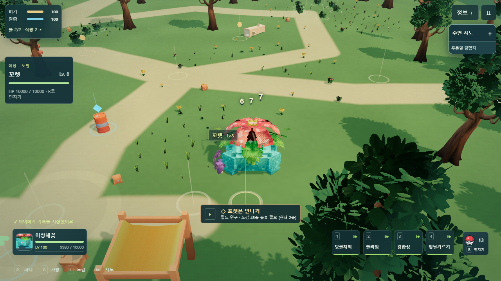
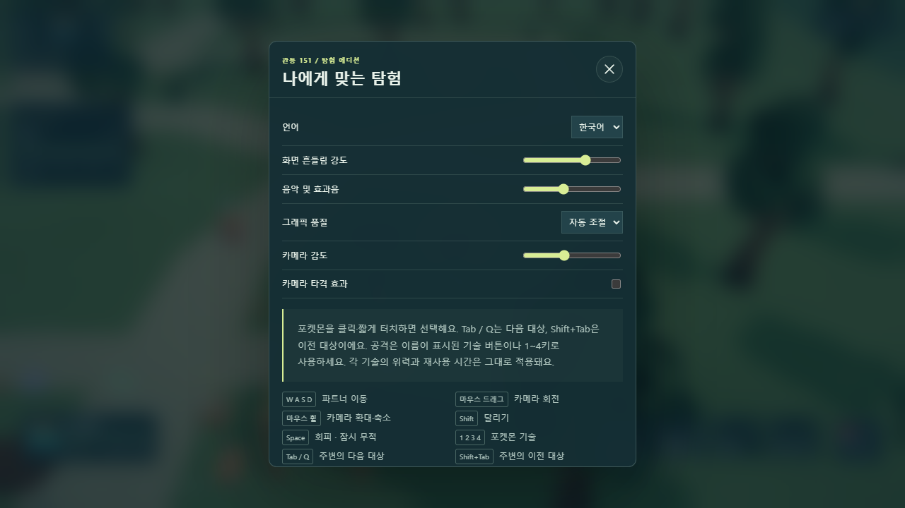
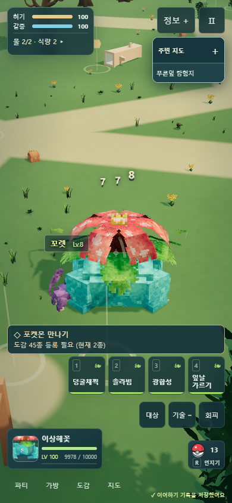
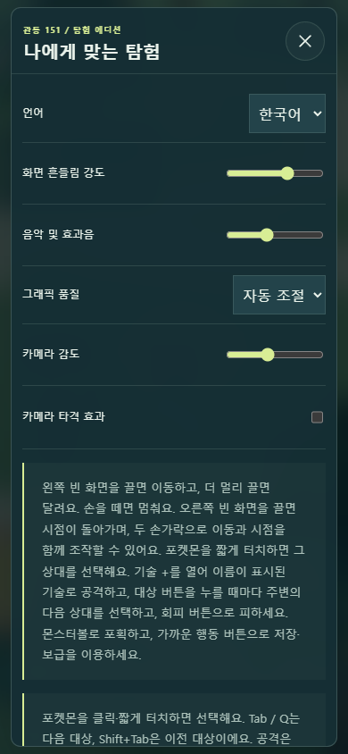
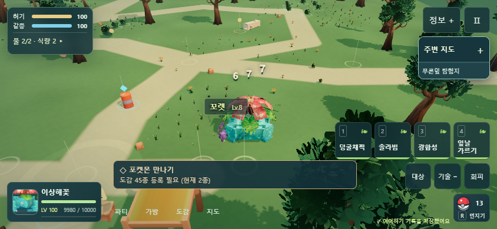
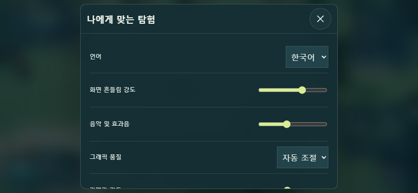

Tab으로 주변 공격 대상 전환
여러 마리가 반격하는 동안 다음·이전 대상을 선택하고, 표시와 실제 공격 대상이 일치하는지 확인했습니다.
Tab / Q 다음 대상 · Shift+Tab 이전 대상 · 모바일 대상 버튼은 다음 대상. 포켓몬 직접 클릭·터치도 유지합니다.
처음에는 가까운 순서로 시작하고, 상대가 움직여도 순환 순서를 유지합니다. 쓰러짐·포획·범위 밖·모델 숨김 상태는 제외합니다. 같은 종도 개체별로 처리하며, 현재 상대가 사라지면 다음 개체로 이어집니다.
이미 준비 중인 기술은 처음 겨냥한 상대에게 실행되고 다음 기술부터 새 상대를 공격합니다. 대상 전환으로 시점·재사용 시간을 바꾸지 않습니다. 메뉴·입력창 안의 Tab은 기존 버튼 이동을 유지합니다.
PC 1280×720
꼬렛 세 마리의 실제 반격과 개체별 대상 전환. 비교를 위해 높은 체력을 준비했습니다.
설정의 조작 안내

모바일 세로 390×844
대상 버튼으로 같은 순서대로 전환합니다. 선택한 꼬렛 이름표와 기술·이동 버튼을 확인했습니다.
모바일 설정 안내

모바일 가로 844×390

모바일 설정 안내

qa=1 메모리 저장과 새 브라우저 세션으로 검수했습니다. 실제 사용자 저장은 접근하지 않았습니다. 모바일은 Edge 화면·터치 재현이며 실물 휴대폰과 Safari는 미검증입니다.
한국어 결과 보고서 · 소스 일반 입력 기록 · 빌드 일반 입력 기록 · 최종 선공 15개 기록 · 338개 자동 검사 · 소스·빌드·HTTP 71개 일치